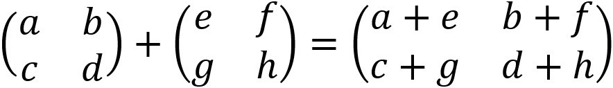
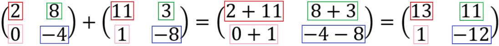

OPERASI MATRIKS
Kita dapat melakukan operasi matematika pada matriks. Operasi matematika dalam matriks mencakup penjumlahan dan pengurangan. Operasi penjumlahan dan pengurangan hanya dapat dilakukan jika kedua ordo matriks tersebut sama. Jika kedua ordo matriks tidak sama, maka operasi matriks tidak terdefinisi.
Penjumlahan Matriks
Dalam penjumlahan matriks, elemen-elemen yang seletak dapat dijumlahkan.
Nah, contoh dari penjumlahan matriks adalah sebagai berikut.
Ordo kedua matriks sudah sama, yaitu 2×2, sehingga penjumlahan matriks bisa dikerjakan. Perhatikan kotak yang ditandai dengan warna yang beda-beda. Karna elemen yang seletak bisa dijumlahkan, jadi kita bisa jumlahin deh. Coba kita lihat elemen baris pertama dan kolom pertama dari kedua matriks tersebut. Karna udah seletak, bisa langsung dijumlahkan, yaitu 2 + 11 menghasilkan 13. Maka, di hasil penjumlahan matriks, elemen baris pertama dan kolom pertama bernilai 13.
Note: Jangan lupa untuk perhatikan tanda plus minusnya ya dalam pengerjaannya!